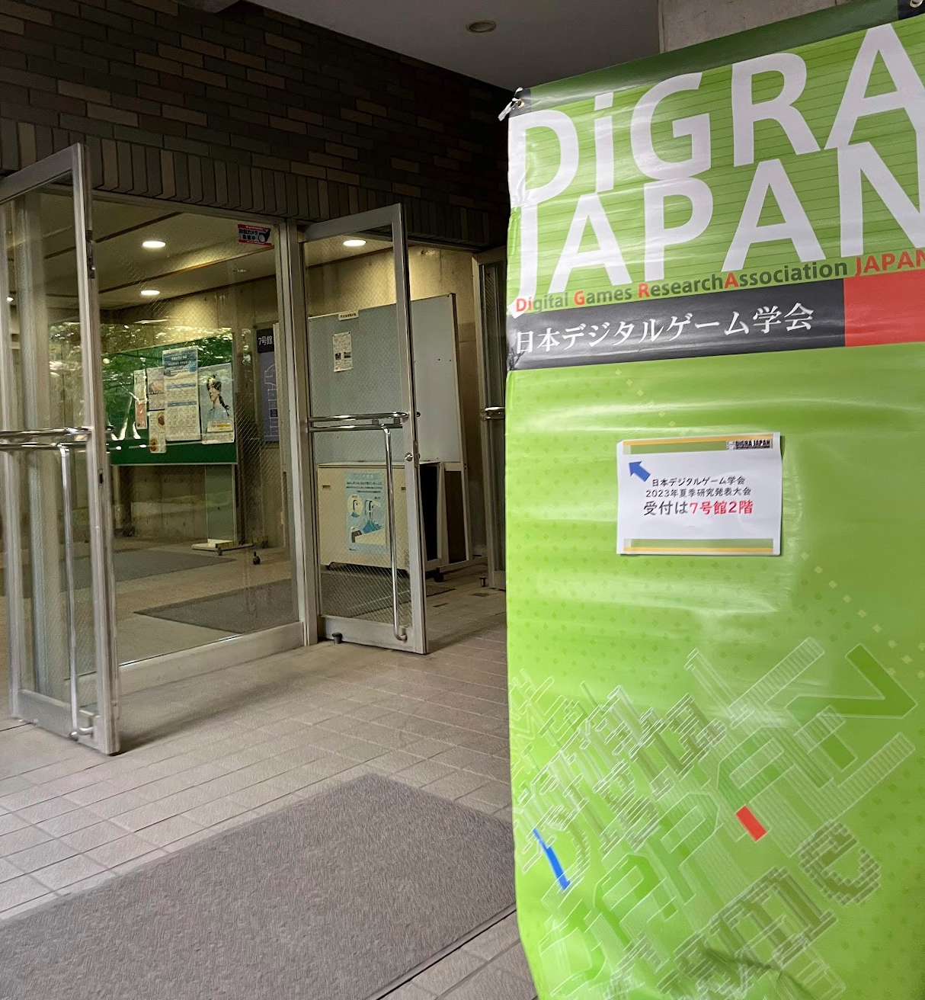
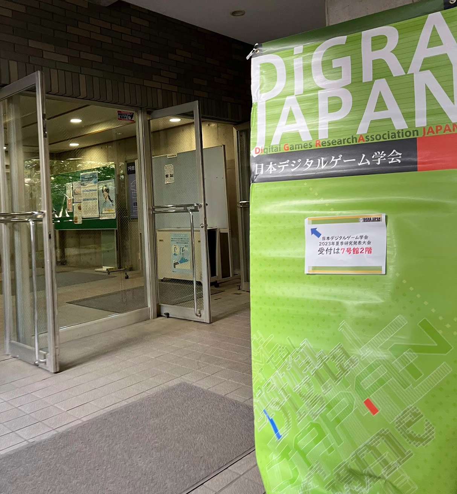

活動内容
私は、2023年9月2日(土)成城大学で開催された夏季研究発表大会にて、LT発表枠として参加しました。
題目「地域におけるデジタル人材育成に向けたゲーム要素を含む課外活動の検討と実践」
技術以外のコミュニティにおいても、ICT技術やクラウド技術、AzureやGitHub、BingAI利用だけに留まらず、今後のデジタル人材育成に向けたゲーム要素を検討させていただき、議論や実践を試みた事例となります。
私は、2023年9月2日(土)成城大学で開催された夏季研究発表大会にて、LT発表枠として参加しました。
題目「地域におけるデジタル人材育成に向けたゲーム要素を含む課外活動の検討と実践」
技術以外のコミュニティにおいても、ICT技術やクラウド技術、AzureやGitHub、BingAI利用だけに留まらず、今後のデジタル人材育成に向けたゲーム要素を検討させていただき、議論や実践を試みた事例となります。
